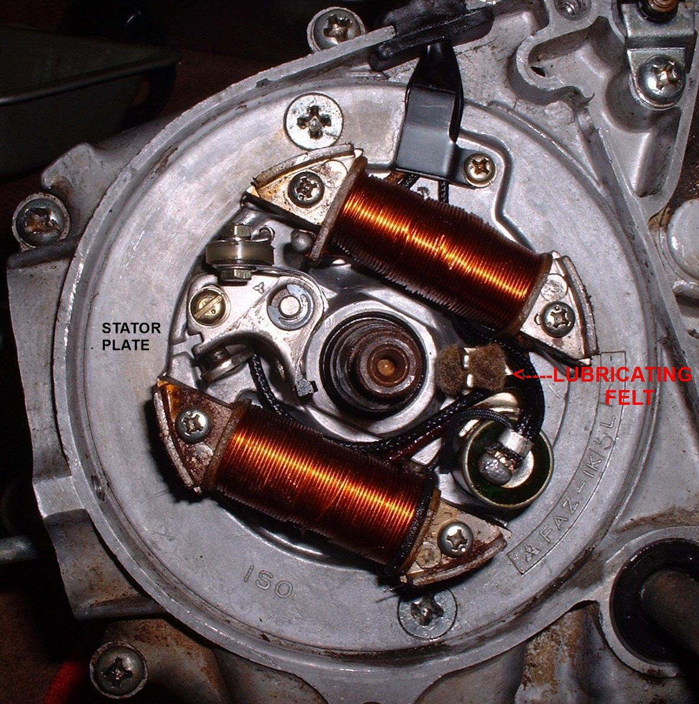

Points are a small mechanical switch in older ignition systems. One contact is fixed to the engine and earthed. The other is on a spring arm, insulated from it, and a cam on the crankshaft or camshaft pushes that arm open once per spark. Most bikes made after about 1980 use electronic ignition instead, but many older and small engines still have points under a cover on the engine or under the flywheel.
What it does
While the points are closed, current builds up in the ignition coil. When the cam opens them, the current stops suddenly and the coil sends a spark to the plug. The moment they open sets the ignition timing, and the gap sets how long the coil charges. A condenser across the points stops them arcing.
Signs it is worn or failing
- Weak spark, misfire or a hard start: Points ignition runs rough or misses, Weak, thin or orange spark.
- No spark at all: No spark at the spark plug.
- Faces pitted, blackened or burnt. A pitted pair cannot be set to an accurate gap.
- The heel (the part that rides the cam) worn flat. This changes the timing even when the gap looks right, and it is the usual wear point on flywheel magnetos.
- Timing that drifts soon after setting.
When to replace it
Replace points that are pitted, worn at the heel or doubtful in any way. A set that looks fine can still cause a misfire. Light corrosion from standing can be cleaned with a flexible points file or folded fine sandpaper, then wiped with a clean solvent. Do not file deep pits, because this cuts the contact area. Save the small screws, washers and insulators from old sets; they rarely wear.
What to match when buying
- Exact part for your engine and cylinder. Twins have one set per cylinder, and some sets differ left to right.
- Brand and part number from the bike's manual or the old set.
- Buy a condenser only if the old one tests bad.
Fitting notes
- The wire screw and spring must be insulated from the fixed contact. If the moving contact touches earth, there is no spark.
- Route the wire as before. A wire touching the spinning flywheel wears through.
- Set the gap with a feeler gauge at the cam's highest point, then recheck after tightening. Use the value in your bike's manual.
- Put a little points grease on the cam and heel. See Inspect, clean and replace contact breaker points, Set points gap and ignition timing and Set points timing on a flywheel magneto.